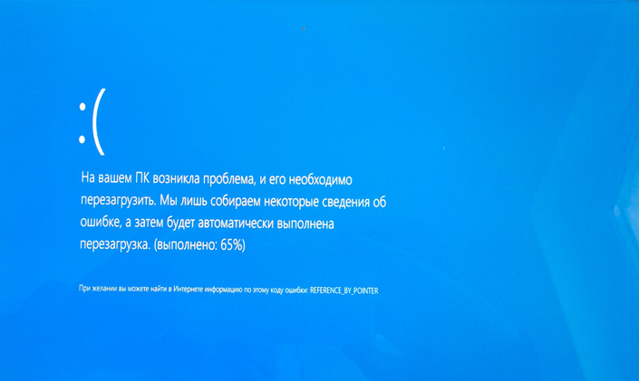

Как работает процессор?
Процессор — это сердце/мозг любого компьютера. Его основное назначение — арифметические и логические операции, и прежде чем погрузиться в дебри процессора
Два основных компонента процессора
Устройство управления
Устройство управления (УУ) помогает процессору контролировать и выполнять инструкции. УУ сообщает компонентам, что именно нужно делать. В соответствии с инструкциями он координирует работу с другими частями компьютера, включая второй основной компонент — арифметико-логическое устройство (АЛУ). Все инструкции вначале поступают именно на устройство управления.
- УУ на жёсткой логике (англ. hardwired control units). Характер работы определяется внутренним электрическим строением — устройством печатной платы или кристалла. Соответственно, модификация такого УУ без физического вмешательства невозможна.
- УУ с микропрограммным управлением (англ. microprogrammable control units). Может быть запрограммирован для тех или иных целей. Программная часть сохраняется в памяти УУ
Арифметико-логическое устройство
Это устройство, как ни странно, выполняет все арифметические и логические операции, например сложение, вычитание, логическое ИЛИ и т. п. АЛУ состоит из логических элементов, которые и выполняют эти операции. Большинство логических элементов имеют два входа и один выход. Ниже приведена схема полусумматора, у которой два входа и два выхода. A и B здесь являются входами, S — выходом, C — переносом (в старший разряд).
Выполнение инструкций
Инструкции хранятся в ОЗУ в последовательном порядке. Для гипотетического процессора инструкция состоит из кода операции и адреса памяти/регистра. Внутри управляющего устройства есть два регистра инструкций, в которые загружается код команды и адрес текущей исполняемой команды. Ещё в процессоре есть дополнительные регистры, которые хранят в себе последние 4 бита выполненных инструкций.
- LOAD_A 8. Это команда сохраняет в ОЗУ данные, скажем. Первые 4 бита — код операции. Именно он определяет инструкцию. Эти данные помещаются в регистры инструкций УУ. Команда декодируется в инструкцию load_A — поместить данные 1000 (последние 4 бита команды) в регистр A.
- LOAD_B 2. Ситуация, аналогичная прошлой. Здесь помещается число 2 (0010) в регистр B.
- ADD B A. Команда суммирует два числа (точнее прибавляет значение регистра B в регистр A). УУ сообщает АЛУ, что нужно выполнить операцию суммирования и поместить результат обратно в регистр A.
- STORE_A 23. Сохраняем значение регистра A в ячейку памяти с адресом 23.